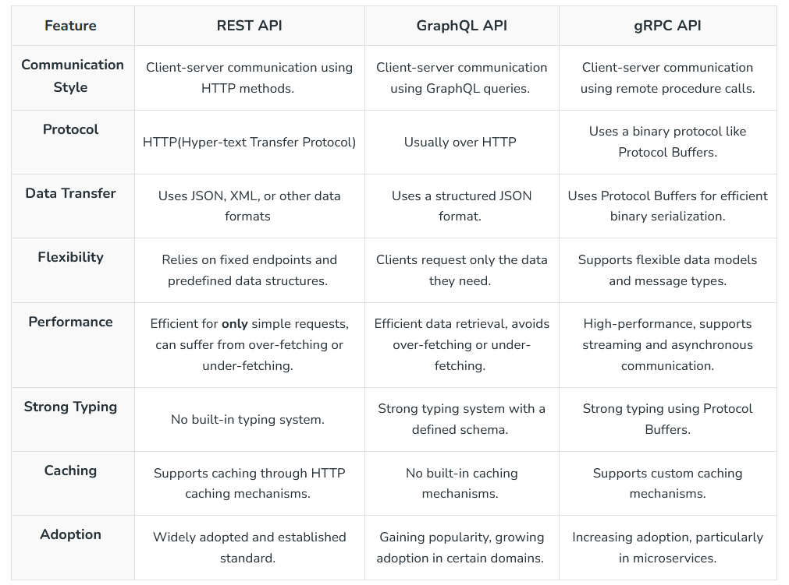

RabbitMQ MDBook
This book is completely Free and Open Source.
If you found this RabbitMQ book valuable and wish to contribute, consider supporting my efforts via cryptocurrency. Thanks!
0xde5D732a5AB44832E1c69b18be30834639F44A2c
Downloads
You can also download the Epub version here:
https://github.com/armanriazi/rabbitmq/tree/main/downloads
Introduction
Welcome to The Concise RabbitMQ Book! This guide equips you with essential knowledge and practical skills for effective NodeJs development. Discover key concepts and techniques to write clean, robust code. Whether you’re a beginner or an experienced developer, this book serves as both a comprehensive guide and a handy reference for leveraging Gateway-Api power in your projects.
About the Author
Arman Riazi is an experienced Senior Backend-end Developer with a passion for Rust, R&D and Blockchain since 2012. You can reach Arman Riazi on the following platforms:
- LinkedIn: https://www.linkedin.com/showcase/armanriazi
- GitHub: https://github.com/armanriazi
- Twitter: https://twitter.com/armanriazi.meta
- Email: armanriyazi.github.ioüìßgmail.com
Introductory
Message brokers are crucial components in modern computing architectures, particularly in distributed systems and microservices-based applications. They facilitate communication between various applications, systems, and services by translating messages between different messaging protocols, allowing them to interact despite being written in different languages or running on different platforms. This functionality is achieved through a combination of mechanisms and patterns designed to ensure efficient, reliable, and secure message exchange.
Products

Messages
At its most basic, messaging involves the following participants [10]:
- Publisher—the entity that sends or publishes a message (also called a producer)
- Message—the information the publisher wants to send. Messages often contain event data, but can also carry queries, commands, and other information.
- Messaging system—the infrastructure that transmits the message
- Subscriber—the ultimate receiver of the message (also called a consumer)
In an event-driven architecture (EDA), a message typically has a destination that separates the publisher from the subscriber. In the PubSub+ platform, a destination is generally a topic endpoint or a queue. Topic endpoints and queues are managed by event brokers [10]. The following diagram illustrates event messages disseminating to multiple subscribers through a topic endpoint [10].

Following are some of the features of a good message passing System [19].
- Simplicity
- Uniform semantics
- Efficiency
- Reliability
- Corrections
- Flexibility
- Security
- Portability
Message Types
The PubSub+ Platform supports three types of messages [10]:
- An event message describes something that an application needs to tell other applications about. An event stream is a series of event messages published as events occur. Pricing streams and trade streams in capital markets are examples of event streams. Events and the messages that describe them are so closely tied together that we often use the terms event and message interchangeably in this documentation.
- A query is a message that retrieves information (for example, using HTTP GET and HEAD methods). A query requires a response.
- A command instructs another application to perform an action or change a state (for example, using HTTP POST, PUT, and DELETE methods). Commands, like queries, require a response.
Message Structure
A message has three parts: Header, Properties, and Body, as shown in the following diagram [10].

Producers and consumers must agree upon the payload format so that the data can be properly interpreted. Event messages use a schema to define the payload format [10].
Message Delivery Modes
PubSub+ event brokers support the following types of message delivery [10]:
Direct Messaging
Direct messaging has the following characteristics [10]:
- Clients subscribe to topics directly.
- Messages are not retained for a client when that client is not connected to an event broker or event broker service.
- Messages can be discarded when congestion or system failures are encountered.
- Messages are not acknowledged upon delivery.
Guaranteed Messaging
Guaranteed messaging has the following characteristics [10]:
- Topic subscriptions are associated with an endpoint on the broker rather than consuming clients.
- Messages can’t be lost once they are acknowledged by the event broker.
- When messages are delivered to a durable endpoint, they are retained until they are consumed by a client.
- Delivery to a client is acknowledged.
Topics
As metadata in a message header that let publishers classify messages and let subscribers specify what they want to receive messages about. This publish-subscribe model enables event brokers to use topics as routing information to send event messages everywhere they need to go [10].
For example:
flight/[status]/[flightNumber]/[origin]/[destination]
- flight indicates the type of event.
- boarding indicates the action that generates the event.
- ea1234/jfk/ord are properties of the specific event.
-
e.g., flightNumber would be wildcard
*.
The > character is used at the last level of a subscription to indicate a “one or more” wildcard match. For example, flight/boarding/> doesn’t match the topic flight/boarding, but it does match flight/boarding/ea1234 and flight/boarding/ea321/yow/fra [10].
How Rich Topic Hierarchies Benefit an Event Mesh?
If the event brokers were configured as an event mesh, events sent to any event broker in the mesh can be forwarded to other event brokers in the mesh. Dynamic Message Routing (DMR) automatically determines the best way to route messages through your event mesh [10]. Smart topics and subscriptions serve various purposes within an event mesh and enable the following benefits when combined with a rich topic hierarchy [10]:
- Event Routing The event topic allows the event broker to make routing decisions without the need for complex understanding of the data encoded in the event’s payload.
- Event Filtering Without this fine-grained filtering, consumers may need to discard some of the received data, or an intermediary process would need to re-publish the data to a more specific stream.
- Event Access Control you can precisely control the flow of data based on the description of the data in the topic. Lack of precise access control may enable rogue applications to consume privileged information or initiate restricted actions.
- Event Handling Policy With a rich topic hierarchy, administrators can ensure that the right messages are replicated, added to replay logs, etc.
Message VPNs
Message VPNs allow for many separate applications to share a single Solace PubSub+ software or appliance event broker while still remaining independent and separated. Basically, Message VPNs enable the virtualization of an event broker into many individual virtual event brokers [10]. (We say vhost about using RabbitMQ)
Message VPNs allow for the segregation of topic space and messaging space by creating fully separate messaging domains. Message VPNs also group clients connecting to a network of Solace PubSub+ event brokers so that messages published within a particular group are only visible to clients that belong to that group. Each client connection is associated with a single Message VPN [10].
Mechanisms
-
Message Queues: At the heart of message brokers’ operation is the concept of a message queue. Messages are stored in the queue in the order they arrive, ensuring they are processed in sequence. This mechanism supports asynchronous processing, preventing data loss, and allowing systems to continue functioning even if processes or connections fail. Message queues are either stored in memory or on a hard disk, depending on the requirements for durability and persistence [4].
-
Translation and Routing: Message brokers translate messages from the sender’s protocol to the receiver’s protocol, ensuring interoperability. They also route messages to the appropriate destination based on predefined rules or patterns, facilitating the decoupling of senders and receivers [2].
-
Reliability and Delivery Guarantees: To ensure message delivery, especially in scenarios where the receiver might not be online immediately, message brokers implement mechanisms like acknowledgments and retransmissions. This ensures that messages are not lost and are delivered once the receiver is ready to process them [4].
Patterns
-
Point-to-Point Messaging: In this model, a producer sends a message directly to a single consumer. This pattern is suitable for scenarios where a direct response is expected from the consumer after processing the message [5].
-
Publish-Subscribe Messaging: Here, a message is published to a topic, and all subscribers to that topic receive the message. This pattern is ideal for broadcasting messages to multiple recipients simultaneously, supporting scenarios like notifications or event-driven architectures [5].
-
Request/Reply
Use Cases and Benefits
-
Microservices Communication: In microservices architectures, message brokers enable seamless communication between services, allowing them to scale independently and deploy updates without impacting others. This is crucial for maintaining system stability and reliability [2].
-
Hybrid and Multicloud Environments: Message brokers facilitate communication between on-premises systems and cloud components, as well as between different cloud platforms. This is essential for organizations transitioning to or operating in hybrid and multicloud environments [2].
-
Serverless Computing: In serverless architectures, where services run on-demand, message brokers provide a scalable and reliable way to trigger functions or services in response to events or messages [2].
Despite their advantages, implementing message brokers introduces complexity and requires understanding various messaging models and patterns. Developers must navigate the learning curve associated with configuring and debugging message brokers to effectively leverage their capabilities in distributed systems [4].
Durability
Qos of event messages, which can be classified as Persistent (Guaranteed) or Non-Persistent [10]:
Persistent Event Streams
Messages flagged as Persistent result in an acknowledgment message being sent back to the producer after the message is stored.

Non-Persistent Event Streams
These events provide a QoS for consumers where loss of messages is acceptable.

Data Plane Tasks
The following diagram illustrates the tasks performed by the Data Plane [10]:

Topics that make it simple to configure a range of capabilities like queue routing, message promotion and demotion, and disaster recovery [10].

The following discussion and links provide information about the components illustrated in the diagram [10]:
- Consumer Egress Queue: Learn more about egress per-client priority queues on brokers, and the commands that you can use to configure them.
- En/Ingress Topic ACL: You can use ACLs to control the topics to which clients are allowed to publish.
- Promotion: Message promotion is the situation where a producer sends Direct messages, and the consumer receives these message from a Guaranteed messaging endpoint.
- Demotion: Message demotion is the situation where the producer sends Persistent messages, and there are consumers that want to receive these messages, but can tolerate lost messages.
- Prioritization: When you enable an endpoint to respect message priority, the priority field in messages from producers are respected for all guaranteed and promoted direct messages.
- Shared Subscriptions: Shared subscriptions can be used to load balance large volumes of client data across multiple instances of back end data center applications.
- Persistent Message moved to Persisted Event Stream: All messages from the TCP network are placed into the Non-Persistent Event Stream directly. Based on the Delivery Mode in the message set to Persistent, the message is moved and persisted against the Persistent Event Stream.
- Logging: Learn how to use messaging APIs for logging.
- Subscription Binding: Typically, messages are published to a Queue when it’s set as the destination of the message. However, you can also add a topic subscription to a Queue so that it receives any messages that are published to a matching topic destination.
Standards
Protocols
REST
The Solace REST Messaging API allows HTTP clients to send and receive messages with an event broker using HTTP POST requests. This enables REST clients to send messages to and receive messages from any Solace PubSub+ event broker clients without needing to use any Solace-provided API [10].

AMQP
Solace PubSub+ software event brokers support AMQP 1.0 as a component in Solace ʼs multi-protocol, any-to-any messaging solution based on open source and open standards. AMQP 0-9-1 and AMQP 1.0 are both messaging protocols, but they are fundamentally different in several key aspects [10]:
- Scope and Topology Model: AMQP 1.0 introduces a different scope and topology model compared to AMQP 0-9-1. While AMQP 0-9-1 focuses on binary messaging and is designed for microservices and enterprise messaging, AMQP 1.0 aims to be more flexible and adaptable to various messaging scenarios, including cloud-based services and IoT devices [12].
- Compatibility and Conformance: AMQP 1.0 is considered a separate protocol from AMQP 0-9-1, and its support requires a plugin in systems like RabbitMQ. Despite being different protocols, both are supported by RabbitMQ, indicating that AMQP 1.0 is not intended as a direct replacement for AMQP 0-9-1 but as an alternative for specific use cases [13].
- Adoption and Implementation: The adoption of AMQP 1.0 has been limited due to its complexity and the fact that it represents a significant change from AMQP 0-9-1. Many messaging systems, including RabbitMQ, continue to support AMQP 0-9-1 extensively and offer AMQP 1.0 as an optional feature. This approach reflects the practical considerations of migrating from one protocol to another, especially when the newer version does not offer clear advantages over the established one [11].
In summary, AMQP 0-9-1 and AMQP 1.0 differ significantly in their design philosophy, scope, and implementation details. AMQP 0-9-1 remains widely adopted for its simplicity and effectiveness in many messaging scenarios, while AMQP 1.0 offers greater flexibility at the cost of increased complexity and less widespread adoption [10].
MQTT
Solace supports the OASIS MQTT 3.1.1 and MQTT 5.0 standards to meet the needs of connected devices and mobile applications that need an efficient way to send and receive information that requires very little client-side processing power, memory and/or bandwidth. The Solace PubSub+ event broker works with any third-party MQTT 3.1.1 or MQTT 5.0 compliant client API, including open source APIs available via an Eclipse initiative called Paho [10].
Web Socket
The WebSocket protocol allows you to specify a subprotocol during the initial HTTP/1.1 handshake that can be used on top of WebSockets (for example, MQTT). Alternatively, you can define your own protocol on top of raw WebSockets if, say, you need custom data semantics or extra features such as publish/subscribe messaging [16]. As an event-driven technology, WebSocket allows data to be transferred without the client requesting it [16]. As ws is bidirectional streaming so, you can use multiplexing with WebSocket to improve performance, but you must either use a third-party library or support it in your code. Both options add complexity to your project.
Features of WebSocket are [19]
- Full-Duplex Protocol: WebSocket is a full-duplex protocol as it allows the application to send and receive data at the same time.
- Stateful Protocol: It means the connection between server and client will not be terminated until and unless closed by any one of them either by the client or by the server. Once the connection is terminated from one end it is also closed by another end.
- 3-way handshake: Websocket uses a 3-way handshake also known as TCP connection for establishing communication between a client and server.
RPC
RPC is especially well suited for client-server (e.g. query-response) interaction in which the flow of control alternates between the caller and callee. Conceptually, the client and server do not both execute at the same time. Instead, the thread of execution jumps from the caller to the callee and then back again [19].
gRPC
By default, gRPC uses Protocol Buffers (Protobuf) Interface Definition Language (IDL) to define the schema [16]. gRPC uses HTTP/2 as the transport protocol and Protobuf as the wire format [16]. gRPC supports multiplexing many requests on one connection, allowing for higher throughput [16].

gRPC-web
As you will recall from the introduction, gRPC relies on HTTP/2 under the hood[16]. Unfortunately, while modern web browsers do actually support HTTP/2, they don’t give client library developers the fine-grain control they need to implement the gRPC specification[16]. To work around this, gRPC-web requires a small proxy on the server to translate the requests and responses from HTTP/2 to HTTP/1 [16].
GraphQL
GraphQL is a language for querying data. Unlike most query languages (such as SQL), you don’t use GraphQL to query a particular type of data store (such as a MySQL database). Instead, you use GraphQL to query data from various sources over HTTP [15].
OpenAPIs
Open API and Swagger
The OpenAPI Specification (OAS) defines a standard, language-agnostic interface to HTTP APIs [17].
OpenMAMA
The Open Middleware Agnostic Messaging API (OpenMAMA) is an open source, lightweight, vendor-neutral integration layer for sending and receiving market data information supported by the Linux Foundation. With unified support for many different kinds of data distribution in a compact, cost-effective platform [10]. OpenMama uses a common publish/subscribe idiom (pub/sub). In this messaging pattern the messages are not sent directly to the receivers, but published to a topic. Subscribers express interest in one or more topics, and receive only messages that interest them. This decoupling of publishers and subscribers allows for greater scalability [14]. OpenMAMDA (Open Middleware Agnostic Market Data API) is a framework running on top of OpenMAMA which provides a market data specific API abstracting quotes, trades, order books, option chains and more, and which provides significant functionality to simplify development of trading applications [14].
JSM
The Java Message Service (JMS) API is a messaging standard that allows application components based on the J2E. Open Message Queue (Open MQ) is both the Java Message Service reference implementation and a production-ready message queue.
Apache Qpid
Messaging built on AMQP. Apache Qpid™ makes messaging tools that speak AMQP and support many languages and platforms. It provides transaction management, queuing, distribution, security, management, clustering, federation and heterogeneous multi-platform support.
Eclipse Paho
MQTT and MQTT-SN are lightweight publish/subscribe messaging transports for TCP/IP and connectionless protocols (such as UDP) respectively. The Eclipse Paho project provides open source, mainly client side, implementations of MQTT and MQTT-SN in a variety of programming languages.
Tools
Solace
RabbitMQ
Index
Protocols
-
Port 5672: AMQP 0-9-1 protocol, used for client-broker communication -
Port 15672: HTTP/HTTPS protocol, used for web management interface
‍‍‍bash curl -u guest:guest localhost:15672/api/overview ‍‍‍
Setup
Docker
docker run -d --hostname localhost --network=gateway --name localhost_rabbit13 -p 8080:15672 -p 5672:5672 -p 25676:25676 rabbitmq:3-management
Queues
Models of queues
- Mirror/Classic
- Quorum
- Stream
streams may be a better option than quorum queues.
In AMQP 0-9-1, queues can be declared as durable or transient. Metadata of a durable queue is stored on disk, while metadata of a transient queue is stored in memory when possible.
So, the default QoS prefetch setting gives clients an unlimited buffer, and that can result in poor behaviour and performance.
Delivered messages can be acknowledged by consumer explicitly or automatically as soon as a delivery is written to connection socket. Automatic acknowledgement mode generally will provide higher throughput rate and uses less network bandwidth. However, it offers the least number of guarantees when it comes to failures. As a rule of thumb, consider using manual acknowledgement mode first.
Metrics and Monitoring
RabbitMQ collects multiple metrics about queues. Most of them are available via RabbitMQ HTTP API and management UI, which is designed for monitoring. This includes queue length, ingress and egress rates, number of consumers, number of messages in various states (e.g. ready for delivery or unacknowledged), number of messages in RAM vs. on disk, and so on. rabbitmqctl can list queues and some basic metrics. Runtime metrics such as VM scheduler usage, queue (Erlang) process GC activity, amount of RAM used by the queue process, queue process mailbox length can be accessed using the rabbitmq-top plugin and individual queue pages in the management UI.
Persistence (Durable Storage) in Classic Queues
Classic queues use an on-disk index for storing message locations on disk as well as a message store for persisting messages. Both persistent and transient messages are always persisted to disk except when:
- the queue is declared as transient or messages are transient. This type of queue is active only while the consumer that created it is active [10].
- messages are smaller than the embedding threshold (defaults to 4096 bytes)
- for RabbitMQ 3.12 and later versions: the queue is short (queues may keep up to #2048 messages in memory at most, depending on the consumer delivery rate)
APIs of rabbitmq-management
Based on the followed link let’s extract some tips:
To make a request put in http://localhost:15672/api/{followed api names}
Might be you need to leave username and password of guest at header request.
Note
For some application code that I have worked I set a hashtag like:
#gateway getMessageCount: {requeue:false}
rabbitmq use Amqp-0-9-1 version of amqp Rabbitmq with amqplib in the NodeJS.
/whoami
Details of the currently authenticated user.
#gateway By Axios GET
/aliveness-test/vhost
Declares a test queue, then publishes and consumes a message. Intended for use by monitoring tools. If everything is working correctly, will return HTTP status 200 with body:
{"status":"ok"}
Note: the test queue will not be deleted (to to prevent queue churn if this is repeatedly pinged).
#gateway By Axios GET
/vhosts/yourDesireName
#gateway By Axios POST it without body on the initialization of your app.
/permissions/vhost/user
#gateway By Axios Get it to know if you have read, write, or configure access or not.
/policies/vhost/name
An individual policy. To PUT a policy, you will need a body looking something like this:
{"pattern":"amq.gen-*", "definition": {"amq-gen":"all"}, "priority":0, "apply-to": "all"}
pattern and definition are mandatory, priority and apply-to are optional.
#gateway By Axios PUT it with body and then check it if is there a old policy or not.
/vhosts
A list of all vhosts.
#gateway By Axios GET to find total count of vhosts.
/nodes
A list of nodes in the RabbitMQ cluster.
#gateway By Axios GET to find total count of nodes.
/queues/vhost
A list of all queues in a given virtual host.
#gateway By Axios GET to find total count of queues of a vhost.
/queues/vhost/name/contents
Contents of a queue. DELETE to purge. Note you can’t GET this.
#gateway By Axios DELETE to purge a name service queue. Do it on step of initilization.
/queues/vhost/name
An individual queue. To PUT a queue, you will need a body looking something like this:
{"auto_delete":false,"durable":true,"arguments":{},"node":"rabbit@smacmullen"}
All keys are optional. This API doesn’t have POST method supportation by RabbitMq.
When DELETEing a queue you can add the query string parameters if-empty=true and / or if-unused=true. These prevent the delete from succeeding if the queue contains messages, or has consumers, respectively.
#gateway By Axios PUT to review above json when you use amqplib.
/queues/vhost/name/get
Get messages from a queue. (This is not an HTTP GET as it will alter the state of the queue.) You should post a body looking like:
{"count":5,"requeue":true,"encoding":"auto","truncate":50000}
- count controls the maximum number of messages to get. You may get fewer messages than this if the queue cannot immediately provide them.
- requeue determines whether the messages will be removed from the queue. If requeue is true they will be requeued - but their redelivered flag will be set.
- encoding must be either “auto” (in which case the payload will be returned as a string if it is valid UTF-8, and base64 encoded otherwise), or “base64” (in which case the payload will always be base64 encoded). If truncate is present it will truncate the message payload if it is larger than the size given (in bytes).
- truncate is optional; all other keys are mandatory.
Please note that the get path in the HTTP API is intended for diagnostics etc - it does not implement reliable delivery and so should be treated as a sysadmin’s tool rather than a general API for messaging.
#gateway In the getMessageCount() method, adding this params: {“count”: 2048, “requeue”:false,“encoding”:“auto”}
Why we use #2048 ? find it by hashtag.
RabbitMq Project
The purpose of this project is to show the use of RabbitMQ + NodeJs with a generic and simple to understand implementation.
What will be shown in this project?
- How to send messages to a specific Exchange on RabbitMQ.
- How to bind the Exchange to a queue.
- How to consume messages form a specific Queue.
- How to set up Dead Letters Exchanges and bind them to a queue.
Senario: Setting Up RabbitMQ
As we called senario, we need to handle it in the code by programming. It is only a perspective of our goal/implemented code.
amq-gen-id is generated by your app.
Queue Configuration(You’d better to use APIs):
- Go to Queues Tab on RabbitMQ
- Click on Add a new queue bellow the table with all queues
- Create three new queues with the following configuration
Name: log_aiservice
Durabillity: Durable
Auto delete: No
Arguments: Leave it empty
Name: error_aiservice
Durabillity: Durable
Auto delete: No
Arguments: Leave it empty
Name: sub-aiservice
Durabillity: Durable
Auto delete: No
Arguments: x-dead-letter-routing-key= amq-gen-id_dead_letter , x-dead-letter-routing-key = sub-aiservice
Exchange Configuration
- Go to Exchanges Tab on RabbitMQ
- Click on Add a new Exchange bellow the table with all exchanges
-
Create two new Exchanges named
AMQ-GEN-IDandamq-gen-id_dead_letterboth with Type:topic | Durabillity: Durable | Auto delete: No | Internal: No and let Arguments empty.
Remember these configurations are default for the project, if you wish to change the names remember to adapt the project to them on the following steps!
- Click on the new Exchange named AMQ-GEN-ID
- Inside AMQ-GEN-ID click on Bindings
- Create two new followed Bidings
To queue: sub-aiservice
Routing Key: aiservice
Arguments: Leave it empty
To queue: log_aiservice
Routing Key: aiservice
Arguments: Leave it empty
Now go back to Exchanges and go to amq-gen-id_dead_letter exchange Create a new Biding:
To queue: error_aiservice
Routing Key: sub-aiservice
Arguments: Leave it empty
Custom APIs rabbitmq-management
Based on the followed link let’s extract some tips:
To make a request put in http://localhost:15672/api/{followed-api-names}
Might you need to leave username and password of guest at header request.
/whoami
Details of the currently authenticated user.
#gateway By Axios GET
/aliveness-test/vhost
Declares a test queue, then publishes and consumes a message. Intended for use by monitoring tools. If everything is working correctly, will return HTTP status 200 with body:
{"status":"ok"}
Note: the test queue will not be deleted (to to prevent queue churn if this is repeatedly pinged).
#gateway By Axios GET
/vhosts/yourDesireName
#gateway By Axios POST it without body on the initialization of your app.
/permissions/vhost/user
#gateway By Axios Get it to know if you have read, write, or configure access or not.
/policies/vhost/name
An individual policy. To PUT a policy, you will need a body looking something like this:
{"pattern":"amq.gen-*", "definition": {"amq-gen":"all"}, "priority":0, "apply-to": "all"}
pattern and definition are mandatory, priority and apply-to are optional.
#gateway By Axios PUT it with body and then check it if is there a old policy or not.
/vhosts
A list of all vhosts.
#gateway By Axios GET to find total count of vhosts.
/nodes
A list of nodes in the RabbitMQ cluster.
#gateway By Axios GET to find total count of nodes.
/queues/vhost
A list of all queues in a given virtual host.
#gateway By Axios GET to find total count of queues of a vhost.
/queues/vhost/name/contents
Contents of a queue. DELETE to purge. Note you can’t GET this.
#gateway By Axios DELETE to purge a name service queue. Do it on step of initilization.
/queues/vhost/name
An individual queue. To PUT a queue, you will need a body looking something like this:
{"auto_delete":false,"durable":true,"arguments":{},"node":"rabbit@smacmullen"}
All keys are optional. This API doesn’t have POST method supportation by RabbitMq.
When DELETEing a queue you can add the query string parameters if-empty=true and / or if-unused=true. These prevent the delete from succeeding if the queue contains messages, or has consumers, respectively.
#gateway By Axios PUT to review above json when you use amqplib.
/queues/vhost/name/get
Get messages from a queue. (This is not an HTTP GET as it will alter the state of the queue.) You should post a body looking like:
{"count":5,"requeue":true,"encoding":"auto","truncate":50000}
- count controls the maximum number of messages to get. You may get fewer messages than this if the queue cannot immediately provide them.
- requeue determines whether the messages will be removed from the queue. If requeue is true they will be requeued - but their redelivered flag will be set.
- encoding must be either “auto” (in which case the payload will be returned as a string if it is valid UTF-8, and base64 encoded otherwise), or “base64” (in which case the payload will always be base64 encoded). If truncate is present it will truncate the message payload if it is larger than the size given (in bytes).
- truncate is optional; all other keys are mandatory.
Please note that the get path in the HTTP API is intended for diagnostics etc - it does not implement reliable delivery and so should be treated as a sysadmin’s tool rather than a general API for messaging.
#gateway In the getMessageCount() method, adding this params: {“count”: 2048, “requeue”:false,“encoding”:“auto”}
Why we use #2048 ? find it by hashtag.
app.get('/', (req, res) => {
open.then((conn) => {
return conn.createChannel();
}).then(function(ch) {
let q = 'test';
return ch.assertQueue(QUEUE_NAME).then(function(ok) {
if (ok.messageCount == 0) {
return NO_MESSAGES;
}
return ch.get(QUEUE_NAME, (msg) => {
if (msg !== null) {
ch.ack(msg);
}
});
});
}).then((msg) => {
if (msg === NO_MESSAGES) {
res.send({ message: "No messages. Waiting..." });
} else {
res.send({ message: `Message received: ${msg.content.toString()}` });
}
}).catch(console.warn);
});
ResponseTime
Let’s say it takes 50ms for Rabbit to take a message from this queue, put it on the network and for it to arrive at the consumer. It takes 4ms for the client to process the message. Once the consumer has processed the message, it sends an ack back to Rabbit, which takes a further 50ms to be sent to and processed by Rabbit. So we have a total round trip time of 104ms. If we have a QoS prefetch setting of 1 message then Rabbit won’t sent out the next message until after this round trip completes. Thus the client will be busy for only 4ms of every 104ms, or 3.8% of the time. If we do total round trip time / processing time on the client for each message, we get 104 / 4 = 26 messages
Using it is pretty much the same as the normal QueueingConsumer except that you should provide three extra parameters to the constructor to get the best performance:
- The first is requeue which says whether, when messages are nacked, should they be requeued or discarded. If false, they will be discarded which may trigger the dead letter exchange mechanisms if they’re set up.
- The second is the targetDelay which is the acceptable time in milliseconds for messages to wait in the client-side QoS prefetch buffer.
- The third is the interval and is the expected worst case processing time of one message in milliseconds. This doesn’t have to be spot on, but within an order of magnitude certainly helps.
Calculate ResTime on the level of a cluster
The federation plugin can transmit messages between brokers (or clusters) in different administrative domains.
RabbitMQ for Node.js in 30 steps
This is a simple guide to RabbitMQ patterns in MacOS using Node.js based on RabbitMQ Tutorials. The steps on this guide may also be applied to other operating systems but be aware that installation and running of RabbitMQ binaries and services could be different. In a nutshell, this guide covers installation, execution and basic configuration of the RabbitMQ service in Node.js.
Contents
Getting Started
Consumer and Producer Pattern
Work Queue Pattern (Round-robin Dispatcher)
- Create
new_task.js - Create
worker.js - Running
worker.js - Running
new_task.js - Tasks running in sequence
- Message acknowledgements
- Message durability
- Check unacknowledged messages
- Message persisence
- Fair dispatch
- Summary
Publish and Subscribe Pattern - Fanout
- Create
emit_log.js - Create
receive_logs.js - Running
receive_logs.js - Running
emit_log.js - Messages published to subscribers
- Check bindings
- Check types of exchanges
- Summary
Publish and Subscribe Pattern - Direct
- Create
emit_log_direct.js - Create
receive_logs_direct.js - Running
receive_logs_direct.js - Running
emit_log_direct.js - Summary
Getting Started
1. Install RabbitMQ
-
https://www.rabbitmq.com/install-homebrew.html
-
brew install rabbitmq
2. Mac OS Brew install issues
- As of writing, I expect that you will also have this issue:
Issue
Error: The `brew link` step did not complete successfully
The formula built, but is not symlinked into /usr/local
Could not symlink sbin/cuttlefish
/usr/local/sbin is not writable.
Fix
cd /usr/local
sudo mkdir sbin
sudo chown -R glenn:admin sbin
brew link rabbitmq
3. Start RabbitMQ Service
brew services start rabbitmq
Consumer and Producer Pattern
1. Create and run send.js
This will send messages to a queue.
#!/usr/bin/env node
const amqp = require('amqplib/callback_api')
// Create connection
amqp.connect('amqp://localhost', (err, conn) => {
// Create channel
conn.createChannel((err, ch) => {
// Name of the queue
const q = 'hello'
// Declare the queue
ch.assertQueue(q, { durable: false })
// Send message to the queue
ch.sendToQueue(q, new Buffer('Hello World!'))
console.log(" {x} Sent 'Hello World'")
// Close the connection and exit
setTimeout(() => {
conn.close()
process.exit(0)
}, 500)
})
})
# Terminal
sudo chmod 755 send.js
./send.js
2. Create and run receive.js
This will receive messages from a queue.
#!/usr/bin/env node
const amqp = require('amqplib/callback_api')
// Create connection
amqp.connect('amqp://localhost', (err, conn) => {
// Create channel
conn.createChannel((err, ch) => {
// Name of the queue
const q = 'hello'
// Declare the queue
ch.assertQueue(q, { durable: false })
// Wait for Queue Messages
console.log(` [*] Waiting for messages in ${q}. To exit press CTRL+C`)
ch.consume( q, msg => {
console.log(` [x] Received ${msg.content.toString()}`)
}, { noAck: true }
)
})
})
# Terminal
sudo chmod 755 receive.js
./receive.js
3. Listing Queues
This will list all queues present in the RabbitMQ service
/usr/local/sbin/rabbitmqctl list_queues
Work Queue Pattern (Round-robin Dispatcher)
1. Create new_task.js
This will send a message to the next available queue.
#!/usr/bin/env node
const amqp = require('amqplib/callback_api')
// Create connection
amqp.connect('amqp://localhost', (err, conn) => {
// Create channel
conn.createChannel((err, ch) => {
// Name of the queue
const q = 'task_queue_durable'
// Write a message
const msg = process.argv.slice(2).join(' ') || "Hello World!"
// Declare the queue
ch.assertQueue(q, { durable: true }) // { durable: true } ensures that the message will still be redelivered even if RabbitMQ service is turned off/restarted
// Send message to the queue
ch.sendToQueue(q, new Buffer(msg), {persistent: true}) // {persistent: true} saves the message to disk/cache
console.log(` {x} Sent '${msg}'`)
// Close the connection and exit
setTimeout(() => {
conn.close()
process.exit(0)
}, 500)
})
})
2. Create worker.js
This will consume messages when it’s the next worker in the round-robin dispatch.
#!/usr/bin/env node
const amqp = require('amqplib/callback_api')
// Create connection
amqp.connect('amqp://localhost', (err, conn) => {
// Create channel
conn.createChannel((err, ch) => {
// Name of the queue
const q = 'task_queue_durable'
// Declare the queue
ch.assertQueue(q, { durable: true }) // { durable: true } ensures that the message will still be redelivered even if RabbitMQ service is turned off/restarted
// Tell RabbitMQ not to give more than 1 message per worker
ch.prefetch(1)
// Wait for Queue Messages
console.log(` [*] Waiting for messages in ${q}. To exit press CTRL+C`)
ch.consume( q, msg => {
// Just to simulate a fake task, length of dots in the message
// is the number of secs the task will run
const secs = msg.content.toString().split('.').length - 1
console.log(` [x] Received ${msg.content.toString()}`)
console.log(` [x] Task will run for ${secs} secs`)
// Fake task which simulates execution time
setTimeout(() => {
console.log(` [x] Done ${msg.content.toString()}`);
// Send acknowledgment
ch.ack(msg)
}, secs * 1000)
}, { noAck: false } // noAck: false means Message acknowledgments is turned on
// When message acknowledgements are turned on, even if a worker.js is killed (Ctrl+C)
// while processing a message, it will be redelivered
)
})
})
3. Open two terminals and run worker.js on each
# terminal 1
sudo chmod 755 worker.js
./worker.js
# => [*] Waiting for messages. To exit press CTRL+C
# terminal 2
./worker.js
# => [*] Waiting for messages. To exit press CTRL+C
4. Open a third terminal and run several new_task.js
sudo chmod 755 new_task.js
./new_task.js First message.
./new_task.js Second message..
./new_task.js Third message...
./new_task.js Fourth message....
./new_task.js Fifth message.....
5. The tasks will run in sequence for each worker.js currently running.
6. Message acknowledgements in worker.js.
This step was already done so there is nothing else to change anything in worker.js.
{ noAck: false } // noAck: false means Message acknowledgments is turned on
// When message acknowledgements are turned on, even if a worker.js is killed (Ctrl+C)
// while processing a message, it will be redelivered
7. Message durability in both worker.js and new_task.js.
This step was already done so there is nothing else to change anything in worker.js.
ch.assertQueue(q, { durable: true }) // { durable: true } ensures that the message will still be redelivered even if RabbitMQ service is turned off/restarted
// Send acknowledgment
ch.ack(msg)
8. Check unacknowledged messages.
To test this, comment out ch.ack(msg). Messages will not be acknowledge with this commented.
/usr/local/sbin/rabbitmqctl list_queues name messages_ready messages_unacknowledged
9. Message persistence in new_task.js.
As requirement to #7, persistence needs to be set to true.
ch.sendToQueue(q, new Buffer(msg), {persistent: true}) // {persistent: true} saves the message to disk/cache
10. Fair dispatch (consumer queue size) in worker.js
// Tell RabbitMQ not to give more than 1 message per worker
ch.prefetch(1)
11. In summary:
- The queue is now capable of round robin dispatch of messages.
- Message acknowledgement is turned on which means that if a worker dies, the message will be redelivered if not already acknowledged.
- Message persistence is turned on which means that if the RabbitMQ is killed or restarted, the message will still be written on disk or cache.
- Fair dispatch is enabled which means, the consumer will not process more than X messages per worker at the risk of filling up a queue.
Publish and Subscribe Pattern - Fanout
1. Create emit_log.js
This will publish messages to an exchange and deliver the messages to all queues bound to that exchange.
#!/usr/bin/env node
const amqp = require('amqplib/callback_api')
// Create connection
amqp.connect('amqp://localhost', (err, conn) => {
// Create channel
conn.createChannel((err, ch) => {
// Name of the exchange
const ex = 'logs'
// Write a message
const msg = process.argv.slice(2).join(' ') || "Hello World!"
// Declare the exchange
ch.assertExchange(ex, 'fanout', { durable: false }) // 'fanout' will broadcast all messages to all the queues it knows
// Send message to the exchange
ch.publish(ex, '', new Buffer(msg)) // '' empty string means that message will not be sent to a specific queue
console.log(` {x} Sent '${msg}'`)
// Close the connection and exit
setTimeout(() => {
conn.close()
process.exit(0)
}, 500)
})
})
Major differences from previous pattern new_task.js
- We are now declaring an exchange instead of a queue
// Name of the exchange
const ex = 'logs'
// Declare the exchange
ch.assertExchange(ex, 'fanout', { durable: false }) // 'fanout' will broadcast all messages to all the queues it knows
- We now publish messages instead of sending a message directly to a queue
// Send message to the exchange
ch.publish(ex, '', new Buffer(msg)) // '' empty string means that message will not be sent to a specific queue
2. Create receive_logs.js
Every instance of this will subscribe to an exchange and receive messages from the queue.
#!/usr/bin/env node
const amqp = require('amqplib/callback_api')
// Create connection
amqp.connect('amqp://localhost', (err, conn) => {
// Create channel
conn.createChannel((err, ch) => {
// Name of the exchange
const ex = 'logs'
// Declare the exchange
ch.assertExchange(ex, 'fanout', { durable: false }) // 'fanout' will broadcast all messages to all the queues it knows
// Declare the queues
ch.assertQueue('', {exclusive: true}, (err, q) => {
// Wait for Queue Messages
console.log(` [*] Waiting for messages in ${q}. To exit press CTRL+C`)
// Tell exchange to send messages to queue
ch.bindQueue(q.queue, ex, '')
// Consume queue messages
ch.consume(q.queue, msg => {
console.log(` [x] ${msg.content.toString()}`)
}, {noAck: true})
})
})
})
Major differences from previous pattern worker.js
- We are now declaring an exchange instead of a queue
// Name of the exchange
const ex = 'logs'
// Declare the exchange
ch.assertExchange(ex, 'fanout', { durable: false }) // 'fanout' will broadcast all messages to all the queues it knows
- We create a non-durable queue with a generated queue name by specifying an empty string.
ch.assertQueue('', {exclusive: true}, (err, q) => {
- We bind the exchange to the queue
// Tell exchange to send messages to queue
ch.bindQueue(q.queue, ex, '')
- The consumer consumes messages to every queue in the exchange (i.e. Sent to all running queues)
// Consume queue messages
ch.consume(q.queue, msg => {
console.log(` [x] ${msg.content.toString()}`)
}, {noAck: true})
3. Open two terminals and run receive_logs.js for each.
#Terminal 1
sudo chmod 755 receive_logs.js
./receive_logs.js
#Terminal 2
./receive_logs.js
4. Open a third terminal and run emit_log.js.
#Terminal 3
sudo chmod 755 emit_log.js
./emit_log.js
5. The message sent by emit_log.js will be sent to all running receive_logs.js.
6. To check all bindings (i.e. Exchanges bound to queues):
/usr/local/sbin/rabbitmqctl list_bindings
7. Aside from fanout, there are many other types of exchanges.
Check them by typing the following in your terminal:
/usr/local/sbin/rabbitmqctl list_exchanges
8. In summary:
- We created subscribers that creates queues with randomly generated names and bind those to an exchange.
- We created a publisher that sends messages to an exchange and consumes the message to all queues bound to that exchange.
Publish and Subscribe Pattern - Direct
1. Create emit_log_direct.js
#!/usr/bin/env node
const amqp = require('amqplib/callback_api')
// Create connection
amqp.connect('amqp://localhost', (err, conn) => {
// Create channel
conn.createChannel((err, ch) => {
// Name of the exchange
const ex = 'direct_logs'
// Store message as args
const args = process.argv.slice(2)
// Write a message
const msg = args.slice(1).join(' ') || "Hello World!"
// Use severity as the binding key
const severity = (args.length > 0) ? args[0] : 'info'
// Declare the exchange
ch.assertExchange(ex, 'direct', { durable: false }) // 'direct' will broadcast messages to its corresponding binding key (i.e. severity)
// Send message to the exchange
ch.publish(ex, severity, new Buffer(msg)) // '' empty string means that message will not be sent to a specific queue
console.log(` {x} Sent ${severity}: '${msg}'`)
// Close the connection and exit
setTimeout(() => {
conn.close()
process.exit(0)
}, 500)
})
})
Major differences from previous pattern emit_log.js
- We identify a binding key as part of the run arguments. For this example, we are using
severitywhich can either have a value ofinfo,warning, orerror.
// Store message as args
const args = process.argv.slice(2)
// Write a message
const msg = args.slice(1).join(' ') || "Hello World!"
// Use severity as the binding key
const severity = (args.length > 0) ? args[0] : 'info'
- The exchange is now declared as
direct.
// Declare the exchange
ch.assertExchange(ex, 'direct', { durable: false }) // 'direct' will broadcast messages to its corresponding binding key (i.e. severity)
- Publishing the message now uses a binding key
severity.
// Send message to the exchange
ch.publish(ex, severity, new Buffer(msg)) // '' empty string means that message will not be sent to a specific queue
console.log(` {x} Sent ${severity}: '${msg}'`)
2. Create receive_logs_direct.js
#!/usr/bin/env node
const amqp = require('amqplib/callback_api')
// Store message as args
const args = process.argv.slice(2);
// Choose what type of binding key `receive_logs_direct.js` is going to use
// If no arguments were provided, output instructions
if (args.length == 0) {
console.log("Usage: receive_logs_direct.js [info] [warning] [error]");
process.exit(1);
}
// Create connection
amqp.connect('amqp://localhost', (err, conn) => {
// Create channel
conn.createChannel((err, ch) => {
// Name of the exchange
const ex = 'direct_logs'
// Declare the exchange
ch.assertExchange(ex, 'direct', { durable: false }) // 'direct' will broadcast messages to its corresponding binding key (i.e. severity)
// Declare the queues
ch.assertQueue('', {exclusive: true}, (err, q) => {
// Wait for Queue Messages
console.log(` [*] Waiting for messages in ${q}. To exit press CTRL+C`)
// For each binding key, tell exchange to send messages to queue
args.forEach( severity => {
ch.bindQueue(q.queue, ex, severity)
})
// Consume queue messages
ch.consume(q.queue, msg => {
console.log(` [x] ${msg.fields.routingKey}: ${msg.content.toString()}`)
}, {noAck: true})
})
})
})
Major differences from previous pattern receive_logs.js
- We now require the user to specify a binding key as part of the run arguments. If no binding key is provided, an instruction will be outputted to the user.
// If no arguments were provided, output instructions
if (args.length == 0) {
console.log("Usage: receive_logs_direct.js [info] [warning] [error]");
process.exit(1);
}
- The exchange is now declared as
direct.
// Declare the exchange
ch.assertExchange(ex, 'direct', { durable: false }) // 'direct' will broadcast messages to its corresponding binding key (i.e. severity)
- The exchange is bound to queues by binding key
// For each binding key, tell exchange to send messages to queue
args.forEach( severity => {
ch.bindQueue(q.queue, ex, severity)
})
- The output message now outputs the routing key (equivalent value to binding key)
// Consume queue messages
ch.consume(q.queue, msg => {
console.log(` [x] ${msg.fields.routingKey}: ${msg.content.toString()}`)
}, {noAck: true})
3. Open 2 terminals to run receive_logs_direct.js for each routing key:
# Terminal 1 - Will display info messages only
chmod 755 receive_logs_direct.js
./receive_logs_direct.js info
# Terminal 2 - Will display warning and error messages
./receive_logs_direct.js warning error
4. Open another terminal to run emit_log_direct.js
# Terminal 3
chmod 755 emit_log_direct.js
./emit_log_direct.js info This is an info message
./emit_log_direct.js warning This is a warning message
./emit_log_direct.js error This is an error message
5. In summary:
- We are now publishing and subscribing to messages using a
directexchange. - A
directexchange uses abinding key(which has an equivalent value to arouting key). This key will tell the subscribers to listen only to a specific queue (similar to a channel). - Receiving logs require that a binding key is specified before runtime. The queue will only receive messages from publishers with a similar binding keys which is also specified before runtime.
Exceptions
resource-locked 405 channel
The client attempted to work with a server entity to which it has no access because another client is working with it. Making sure you have not encounter with a exclusive queue.
qpid.apache, nvoy-amqp
Kafka
To quickly grasp the concepts and patterns of Kafka, focus on understanding its core components and how they interact within the system. Here’s a condensed reference:

Core Concepts
-
Event: The fundamental unit of data in Kafka, representing something that happened (e.g., a purchase order, payment). Each event is a record with a timestamp, key, value, and optional headers. The key is crucial for ordering, colocation, and retention [20].
-
Topic: Organizes events of the same type. Think of it as a database table. All events published to a topic are immutable and append-only. Topics are divided into partitions for scalability and parallelism [20].
-
Partition: The unit of data distribution and parallelism. Data for a partition is stored within a single broker, allowing for independent and parallel access by producers and consumers. Partitions enable Kafka’s scalability and fault tolerance [20].
-
Offset: A unique identifier for each event within a partition, ensuring events are stored and consumed in order. Offsets are monotonically increasing and never reused, facilitating consumer tracking [20].

Key Components
-
Producer API: Allows publishing events to Kafka. Producers send records to topics, specifying the topic and partition [20].
-
Consumer API: Enables reading events from Kafka. Consumers subscribe to topics and consume records from the specified partitions [20].
-
Streams API: A higher-level API for building applications and microservices, where the input and output data are stored in Kafka clusters. It supports complex event processing and stream querying [20].

-
Connect API: Integrates Kafka with other systems. Source connectors import data from external systems into Kafka, while sink connectors export data from Kafka to external systems [20].
-
Schema Registry: Manages and stores Avro schemas. It provides a serving layer for your metadata. It ensures that data produced is compatible with the schema defined in the registry [20].
Patterns and Architectures
-
Publish-Subscribe Model: Commonly used pattern where producers publish messages to topics, and consumers subscribe to topics of interest. This decouples message producers from consumers [20].
-
Log Compaction: Ensures that Kafka retains at least the last known value for each message key within a partition. This is useful for scenarios where you want to ensure that the latest state is available even if older states are discarded [20].
-
Exactly Once Semantics: Kafka aims to deliver messages exactly once to the consumer. This is achieved through a combination of idempotent producers, atomic commits, and consumer offsets [20].
-
Scalability and Fault Tolerance: Kafka’s distributed nature allows it to scale horizontally by adding more brokers to the cluster. It also provides fault tolerance through replication of data across multiple brokers [20].
Further Learning
Pseudo coding a message broker
Creating a message broker that avoids vendor lock-in involves designing a system that can handle various messaging protocols and formats, allowing it to communicate with different systems regardless of the technology stack they’re using. This approach ensures flexibility and interoperability across different platforms and services. Here’s a high-level pseudocode outline for such a message broker:
Step 1: Define Interfaces for Message Protocols
First, define interfaces for handling common messaging protocols like AMQP (Advanced Message Queuing Protocol), MQTT (Message Queuing Telemetry Transport), and HTTP(S) REST APIs. These interfaces will abstract away the specifics of each protocol, allowing the broker to work with them interchangeably.
interface IMessageProtocolHandler {
void send(message: Message);
Message receive();
}
Step 2: Implement Protocol Handlers
Implement classes for each messaging protocol that adhere to the IMessageProtocolHandler interface. Each class will contain the logic specific to its protocol but will expose a unified API through the interface.
class AmqpHandler implements IMessageProtocolHandler {
// Implementation details for sending and receiving messages via AMQP
}
class MqttHandler implements IMessageProtocolHandler {
// Implementation details for sending and receiving messages via MQTT
}
class RestApiHandler implements IMessageProtocolHandler {
// Implementation details for sending and receiving messages via HTTP(S)
}
Step 3: Broker Logic
The core of the message broker will manage connections to these handlers, dispatching messages based on their destination and protocol. It should also handle message routing, persistence, and delivery acknowledgments.
class MessageBroker {
private handlers: Map<String, IMessageProtocolHandler>;
constructor() {
this.handlers = new Map(); // Initialize with default handlers if needed
}
registerHandler(protocol: string, handler: IMessageProtocolHandler) {
this.handlers.set(protocol, handler);
}
sendMessage(destination: string, message: Message, protocol: string) {
const handler = this.handlers.get(protocol);
if (handler!= null) {
handler.send(message);
} else {
throw new Error("No handler found for protocol " + protocol);
}
}
receiveMessage(source: string, protocol: string): Promise<Message> {
return new Promise((resolve, reject) => {
const handler = this.handlers.get(protocol);
if (handler!= null) {
try {
resolve(handler.receive());
} catch (error) {
reject(error);
}
} else {
reject(new Error("No handler found for protocol " + protocol));
}
});
}
}
Step 4: Configuration and Runtime
At runtime, the broker can be configured to add or remove handlers dynamically, allowing it to adapt to changes in the messaging landscape without requiring downtime or reconfiguration. This flexibility is crucial for avoiding vendor lock-in, as it enables the broker to integrate with new technologies or protocols as they emerge.
This pseudocode provides a basic framework for building a message broker that is designed to avoid vendor lock-in. By abstracting the messaging protocols behind a common interface, the broker can seamlessly integrate with a wide range of messaging systems, ensuring interoperability and flexibility in communication between disparate systems and applications.
Citations:
Glossery
Shortwords
High Availability (HA)
Disaster Recovery (DR) failover
Event-driven-architecture (EDA)
Access control lists manage client access to PubSub+ event brokers (ACL)
Message exchange patterns (MEP)s
Dynamic Message Routing (DMR)
Application Programming Interface (APIs)
Synonyms
dequeued, acknowledged, consumer, subscription
queued, producer
requeue, redelivered flag, remove from the queue
Citations
[1] https://en.wikipedia.org/wiki/Architectural_pattern
[2] https://www.ibm.com/topics/message-brokers
[3] https://tsh.io/blog/message-broker/
[4] https://hasithas.medium.com/introduction-to-message-brokers-c4177d2a9fe3
[5] https://www.vmware.com/topics/glossary/content/message-brokers.html
[6] https://softwareengineering.stackexchange.com/questions/443684/message-broker-design-pattern-best-practice
[7] https://www.geeksforgeeks.org/what-are-message-brokers-in-system-design/
[8] https://hevodata.com/learn/message-brokers/
[9] https://www.enterpriseintegrationpatterns.com/patterns/messaging/MessageBroker.html
[10] https://docs.solace.com/
[11] https://ably.com/periodic-table-of-realtime/amqp-0-9-1
[12] https://www.rabbitmq.com/amqp-0-9-1-protocol
[13] https://www.rabbitmq.com/docs/specification
[14] https://openmama.finos.org/what_is_openmama.html
[15] https://www.resolutesoftware.com/blog/rest-vs-graphql-vs-grpc-vs-websocket/
[16] https://ably.com/topic/grpc-vs-websocket
[17] https://swagger.io/specification/
[18] https://apidog.com/blog/restful-api-vs-rest-api/
[19] https://www.geeksforgeeks.org/
[20] https://developer.confluent.io/courses/architecture/get-started/